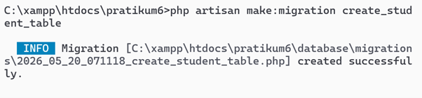
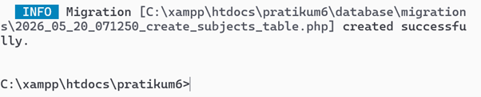
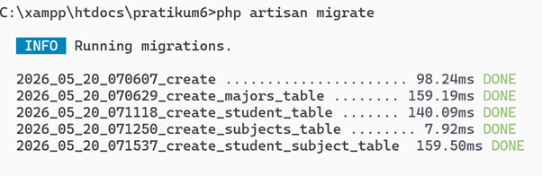
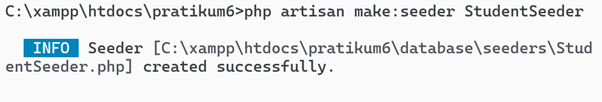
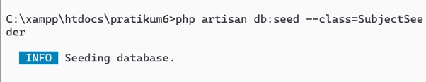
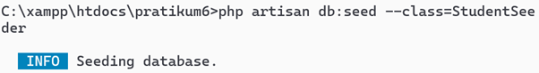

📖 Pendahuluan
Laravel menyediakan fitur Eloquent Relationship untuk menghubungkan antar tabel database. Dalam praktikum ini, dibuat sistem akademik sederhana dengan tiga entitas: Student, Major (jurusan), dan Subject (mata kuliah). Relasi yang digunakan:
- One-to-Many (Major → Student): Satu jurusan memiliki banyak mahasiswa.
- Many-to-One (Student → Major): Banyak mahasiswa memiliki satu jurusan.
- Many-to-Many (Student ↔ Subject): Mahasiswa dapat mengambil banyak mata kuliah, dan mata kuliah dapat diambil banyak mahasiswa, dengan tabel pivot
student_subject.
Praktikum ini mengimplementasikan migration, seeder, model, controller, routing, dan view untuk menampilkan data beserta relasinya, serta menyelesaikan latihan query Eloquent.
🎯 Tujuan Praktikum
- Memahami konsep relationship One-to-Many dan Many-to-Many di Laravel.
- Membuat migration dengan foreign key (constraint) untuk tabel majors, students, subjects, dan pivot student_subject.
- Mengimplementasikan Eloquent relationship di model (hasMany, belongsTo, belongsToMany).
- Membuat seeder untuk mengisi data awal jurusan, mata kuliah, mahasiswa beserta relasi mata kuliah yang diambil.
- Membuat controller StudentController dengan metode CRUD (index, show, create, store, edit, update, destroy) menggunakan eager loading.
- Membuat routing resource dan views dengan Bootstrap untuk menampilkan daftar, detail, form tambah/edit mahasiswa.
- Melakukan query Eloquent sesuai latihan: menampilkan semua mahasiswa dengan jurusan & mata kuliah, jurusan dengan mahasiswa terbanyak, mata kuliah mahasiswa tertentu, total SKS per mahasiswa.
🛠️ Lingkungan Pengembangan (Tools)
📌 1. Persiapan Database
Database yang digunakan bernama pratikum_laravel. Konfigurasi di file .env disesuaikan. (Tidak ada gambar untuk langkah ini, namun database sudah dibuat sebelumnya).
📌 2. Migration – Membuat Tabel
Perintah membuat migration untuk tabel majors (Picture1), students (Picture2), subjects (Picture3). Migration untuk student_subject juga dibuat meskipun tidak ada gambar terpisah, karena muncul di hasil migrate (Picture4).
Picture1: Membuat migration majors

Gambar 1: Perintah php artisan make:registration create_major_table (typo pada gambar, seharusnya make:migration). File migration 2026_05_20_070629_create_majors_table.php berhasil dibuat.
Picture2: Membuat migration students

Gambar 2: Perintah php artisan make: migration create_student_table (ada spasi setelah colon). Migration 2026_05_20_071118_create_student_table.php dibuat.
Picture3: Membuat migration subjects

Gambar 3: Perintah php artisan make:migration create_subjects_table berhasil.
Isi masing-masing migration sesuai modul (foreign key di students, field name dan sks di subjects). Migration untuk tabel pivot student_subject juga dibuat (tidak ada gambar, namun terlihat di hasil migrate).
Picture4: Menjalankan migrate

Gambar 4: Perintah php artisan migrate menjalankan semua migration, termasuk create_student_subject_table. Semua tabel berhasil dibuat.
📌 3. Model dengan Eloquent Relationship
Membuat model untuk Major, Student, dan Subject.
Picture5: Model Major

Gambar 5: php artisan make:model Major berhasil.
Picture6: Model Student

Gambar 6: php artisan make:model Student berhasil.
Picture7: Model Subject

Gambar 7: php artisan make:model Subject berhasil.
Kemudian ditambahkan relasi sesuai modul:
// Major: hasMany(Student::class)
// Student: belongsTo(Major::class) dan belongsToMany(Subject::class)
// Subject: belongsToMany(Student::class)📌 4. Seeder – Mengisi Data Awal
Membuat seeder untuk Major, Subject, dan Student.
Picture8: MajorSeeder

Gambar 8: php artisan make:seeder MajorSeeder berhasil.
Picture9: SubjectSeeder

Gambar 9: php artisan make:seeder SubjectSeeder berhasil.
Picture10: StudentSeeder

Gambar 10: php artisan make:seeder StudentSeeder berhasil.
Kemudian mengisi masing-masing seeder dengan data (4 jurusan, 5 mata kuliah, 5 mahasiswa + attach random subjects). Setelah itu menjalankan seeder satu per satu.
Picture11: Menjalankan MajorSeeder

Gambar 11: php artisan db:seed --class=MajorSeeder berhasil.
Picture12: Menjalankan SubjectSeeder

Gambar 12: php artisan db:seed --class=SubjectSeeder berhasil.
Picture13: Menjalankan StudentSeeder

Gambar 13: php artisan db:seed --class=StudentSeeder berhasil (data mahasiswa dan relasi many-to-many terisi).
📌 5. Controller – StudentController
Membuat controller untuk menangani logika CRUD student.

Gambar 14: php artisan make:controller StudentController berhasil dibuat.
Kemudian diisi dengan method index(), show(), create(), store(), edit(), update(), destroy() sesuai modul, menggunakan eager loading with(['major','subjects']) untuk menghindari N+1 problem.
📌 6. Routing & Views
Routing resource di routes/web.php:
Route::resource('students', StudentController::class);Views menggunakan Blade dengan Bootstrap (layout app.blade.php, index, show, create, edit). Halaman index menampilkan daftar mahasiswa dengan jurusan, mata kuliah, dan total SKS. Halaman show menampilkan detail lengkap beserta daftar mata kuliah yang diambil.
Contoh tampilan index (tidak ada gambar spesifik, namun sesuai modul).
📌 7. Latihan Query dengan Relationship
1. Semua mahasiswa beserta jurusan dan mata kuliahnya
$students = Student::with(['major','subjects'])->get();2. Jurusan yang memiliki mahasiswa terbanyak
$major = Major::withCount('students')->orderBy('students_count','desc')->first();3. Mata kuliah yang diambil oleh mahasiswa tertentu (misal id=1)
$student = Student::with('subjects')->find(1); $student->subjects;4. Total SKS yang diambil setiap mahasiswa
$students = Student::with('subjects')->get(); foreach($students as $s) { echo $s->subjects->sum('sks'); }Hasil query tersebut dapat diverifikasi melalui Tinker atau halaman index (kolom Total SKS).
📋 Rangkuman Perintah Artisan yang Digunakan
| Kategori | Perintah (sesuai gambar) |
|---|---|
| Migration | php artisan make:registration create_major_tablephp artisan make: migration create_student_tablephp artisan make:migration create_subjects_tablephp artisan migrate |
| Model | php artisan make:model Majorphp artisan make:model Studentphp artisan make:model Subject |
| Seeder | php artisan make:seeder MajorSeederphp artisan make:seeder SubjectSeederphp artisan make:seeder StudentSeederphp artisan db:seed --class=...Seeder |
| Controller | php artisan make:controller StudentController |
✅ Kesimpulan
Praktikum ini berhasil mengimplementasikan relasi One-to-Many (Major ↔ Student) dan Many-to-Many (Student ↔ Subject) di Laravel menggunakan Eloquent ORM. Seluruh tahapan mulai dari migration, seeder, model, controller resource, routing, hingga views dengan Bootstrap dapat berjalan dengan baik. Eager loading digunakan untuk menghindari N+1 problem saat menampilkan data relasi. Latihan query juga diselesaikan dengan memanfaatkan method with(), withCount(), sum(), dan pluck(). Pemahaman tentang relationship ini sangat penting untuk pengembangan aplikasi web berbasis database yang kompleks seperti sistem akademik.
Seluruh kode proyek telah diunggah ke repository GitHub.
🔗 Tautan Repositori GitHub
Kunjungi Repo →📸 Galeri Dokumentasi Praktikum (prk7)
Catatan: Seluruh gambar diambil langsung dari hasil praktikum di terminal CMD.